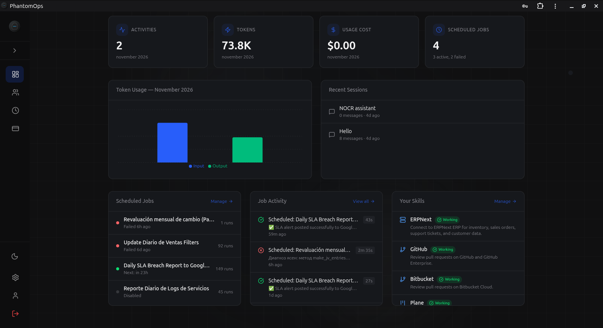
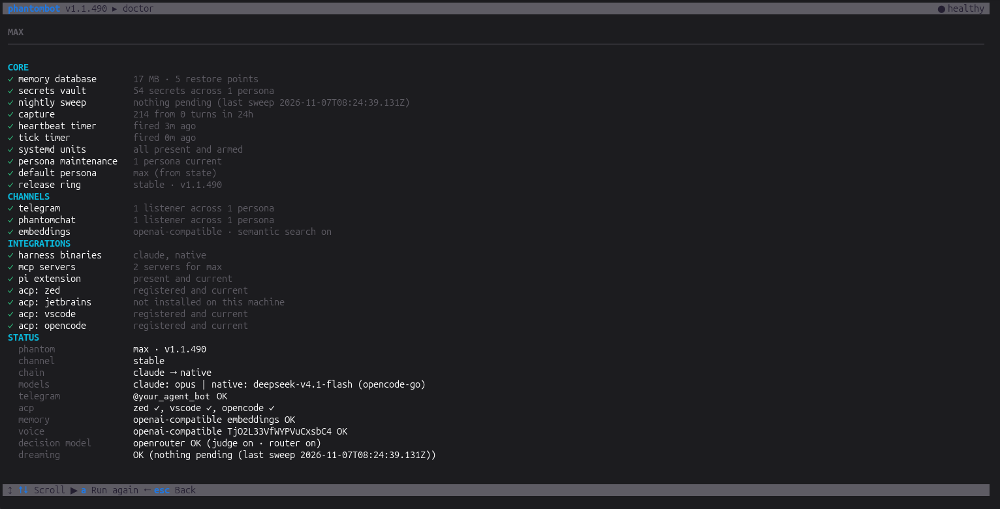

AI you actually control
Phantomyard.
The human-agent interface.
One company, three phantoms. Phantomyard Desktop is where people and agents share one workspace, PhantomOps is the control plane that keeps their AI on a leash, and Phantombot is the agent runtime on your own metal. Different surfaces, the same ghost underneath.
Install Now01 / Phantomyard Desktop
Every agent you run, in one window.

Phantomyard Desktop is the agent workspace on your machine. Spin up a persona on any provider, hand it the tools on this PC, and work beside it with the humans on your team. The room you share is PhantomChat, peer-to-peer encrypted, so the front door to your agents is a conversation nobody else can read.
- Any provider, your key. Pick the provider, paste the key, choose a model. Each persona keeps its own credentials in an encrypted vault on your disk.
- Agents with hands. A Provider contact runs on this PC with the persona's full tools, so it reads the repo, runs the command and edits the file.
- Humans and agents, one room. Phantom, Human and Provider contacts share the same sessions, so a group can hold a teammate, their phantom and their agent.
- Your phone is the remote control. The PWA talks to the same personas over encrypted relays, so you can steer the agents running at home from anywhere, with no open port and no VPN.
Get Phantomyard Desktop
Desktop app
Desktop v1.1.109. All releases and checksums · Early alpha, expect rough edges.
02 / PhantomOps
Your team's AI, on a short leash.

PhantomOps is the control plane for enterprise AI. It hands out the identity, the secrets and the sandbox, then gets out of the way: your people use any OpenAI-compatible client, PhantomChat, or a chatbox you drop into your own product, and every request passes through one gate you own.
Your people, your apps
Any OpenAI-completions client, PhantomChat, or an embedded chatbox
PhantomOps
Token, budget, threat screen, per-user vault
Any model
Pooled provider access, one bill
- Low-cost AI for the whole team. Pooled provider access, one invoice, per-user limits and spend caps you set.
- A vault and a sandbox per user. Each person gets their own secrets and an isolated instance. Access is scoped, revocable and simple to reason about.
- Skills packaged once. Wrap the enterprise apps you already run, then let the whole team inherit the same skills instead of each rebuilding them.
- AI in your own product. Drop in a chatbox with the full stack behind it and threat protection in front of every call.
Get PhantomOps
Fully hosted at phantomops.app. Nothing to install, nothing to babysit. You get the control panel and the bill you can predict.
03 / Phantombot
Your AI teammate, on your box.

Armors your harness, learns your world, zero context tax. A security perimeter and a memory in front of Claude Code, Codex or Pi, with your keys on your hardware.
- Yours end to end. Runs on your machine, with your provider keys, no telemetry leaving the box.
- Two-tier trust. A threat judge reads untrusted input before it can reach a capable agent.
- Memory that lasts. A journal, structured drawers and a knowledge base, so tomorrow's session starts where today's ended.
- Harness agnostic. One soul, every surface: TUI, Telegram, web, or whatever you wire up next.
Get Phantombot
CLI / TUI install
Linux & macOS
curl -fsSL https://raw.githubusercontent.com/phantomyard/phantombot/main/install.sh | shWindows (PowerShell)
iex ((iwr -useb https://raw.githubusercontent.com/phantomyard/phantombot/main/install.ps1).Content.TrimStart([char]0xFEFF))The installers fetch the latest verified release and register the platform service. TUI runs with a bare phantombot; single-file binaries for Linux, macOS and Windows are on the releases page · keybindings · full tour at phantombot.bot
04 / The yard
Three phantoms, one interface.
Phantomyard Desktop puts your agents in one window and your people beside them. PhantomOps issues the identity, the secrets and the sandbox. Phantombot carries the work away from the chat. One interface over three surfaces, whichever one your team happens to be on.
- Start with Phantomyard Desktop if you want agents on your own PC and a phone that can reach them.
- Start with PhantomOps if you have a team, a bill and a compliance question.
- Start with Phantombot if you want an agent that remembers your world and runs headless on your metal.
05 / PhantomTools
Eleven small tools, no strings.
PhantomTools is where the small stuff lives: one repo of self-contained utilities we built for our own yard and gave away. Each one installs on its own, depends on nothing else, and does one job.
- Phone calls. A Twilio voice agent that answers, dials and holds a real conversation.
- git without personal tokens. GitHub App auth that makes push and fetch just work.
- Inbox to zero. Email triage that wakes your agent the moment mail arrives.
- Agent-to-agent messages. A tiny filesystem inbox with dedup and an audit log.
- Meetings. Your Phantom joins a Jitsi room as text, records it, takes notes.
- An org in one file. Departments, roles and policies compiled into persona files.
- Publishing. A bilingual static blog with an editorial dashboard.
- Speech out loud. A local voice service with OpenAI-compatible endpoints.
Get PhantomTools
MIT licensed and deliberately boring: plain scripts, one README each, additive to Phantombot and never a fork of it.